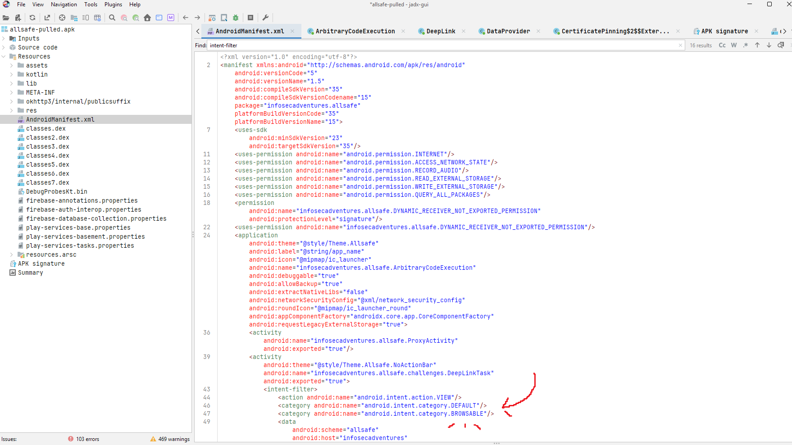

A from-zero tour of the Android internals that mobile pentesting rests on, written for someone who has done a little web or CTF but no mobile. Read it top to bottom once and the writeups will make sense. These are Android-specific; the iOS equivalents (IPA/Mach-O, URL schemes, ATS) get their own page once a Mac is in the lab.
The framework · what every finding maps to
The industry-standard list of the ten most common mobile app risk categories, maintained by OWASP alongside the deeper MASVS / MASTG. This guide is built around the 2024 revision - the renumbered one, where M9 is data storage. Every finding in the writeups maps to one of these, which is why the whole site is organised one risk at a time.
debuggable or allowBackup left on, and over-broad permissions.The core security boundary
When an app installs, Android gives it its own Linux user (a unique UID) and a private
folder at /data/data/<package>/. By default, no app can read another app's
files. That isolation is the sandbox, and it is the one security boundary
everything else on the device is built on.
On a normal phone you cannot read another app's private data, which is exactly the point. As a tester you root the device (or use a rootable emulator image) to become superuser and step outside the sandbox, so you can see what the app is hiding. On a real engagement you do this on your own rooted device or emulator, never the client's phone.
Package anatomy · what you are holding
An Android app ships as an APK (Android Package). Mechanically it is just a
ZIP file. Rename it to .zip, unzip it, and you see the parts:
AndroidManifest.xml - the app's blueprint (components, permissions, exported entry points). Binary-encoded inside the APK.classes.dex - the compiled code (see .dex files).resources.arsc + res/ - compiled resources, layouts, and strings (this is where strings.xml lives).lib/ - native libraries (.so, C/C++ code).assets/ - bundled raw files; sometimes secrets, configs, or web content hide here.META-INF/ - the signing info.Play Store apps often ship as an AAB and install as split APKs
(base.apk plus split_config.*.apk); when you pull one you get several
files, and that is normal. And the file layout tells you the framework: a React Native app has a
JS bundle at assets/index.android.bundle, and a Flutter app compiles to
lib/libapp.so. Framework changes where the logic lives.
tar -tf peek showed the dex pile, assets, and native libs before we ever decompiled.
Android bytecode · the app's compiled code
Dalvik EXecutable - Android's compiled-code format. Your Java/Kotlin is
compiled to JVM .class files, then a tool (d8/r8)
converts those into a single classes.dex of Dalvik/ART bytecode, optimized for
mobile. That classes.dex is your app's code; the runtime (ART) executes it.
A single dex caps at 65,536 method references - the "64K limit" - so bigger
apps spill into classes2.dex, classes3.dex, and so on
(multidex). AllSafe ships six, which by itself tells you it's a heavier Kotlin app than
a simple CTF box.
The .dex is what jadx runs backwards, from bytecode to readable
Java, so it's where the app's logic lives and where static analysis happens. Two caveats worth
knowing: native code in lib/*.so is not in the dex (that's
reverse-engineering territory), and a near-empty classes.dex sitting next to an
encrypted blob in assets/ is a sign the app is packed, the real
dex is decrypted into memory at runtime.
The attack-surface map · read this first
AndroidManifest.xml is the app's blueprint. It declares every component
(activities, services, receivers, providers), the permissions the app requests, and which
components are exported. It is the first file you read on every test. Inside the APK it is
binary-encoded, so you decode it with apktool or read it in jadx's Resources view.
android:debuggable="true" - a debug build shipped to production. Attach a debugger, run code as the app, read its memory. Never belongs in a release.android:allowBackup="true" - pull the app's private data over adb backup, no root needed (largely neutered on Android 12+, still a weak default).android:usesCleartextTraffic="true" - the app may talk plain HTTP, trivial to intercept.android:networkSecurityConfig - points to an XML defining trusted CAs, cleartext exceptions, and pinning. Its absence plus cleartext on is itself a weak posture.android:requestLegacyExternalStorage="true" - opts the app out of Scoped Storage, so with the storage permissions it reads and writes broadly across shared storage. A privacy and data-exposure concern.<uses-permission> - READ_SMS, ACCESS_FINE_LOCATION, READ_CONTACTS, and similar over-broad permissions are a privacy concern.Android IPC · attack surface
An Intent is a message: "Start this thing" or "Handle this
data." An <intent-filter> is a component saying "I can handle
messages that look like this."
So when it comes to the DeepLinkTask filter we saw in AllSafe, it is saying:
"I handle VIEW actions for URIs starting with
allsafe://infosecadventures/congrats."
exported controls
Whether other apps can start this component, or only the app itself.
exported="false" → internal only. Other apps can't touch it.exported="true" → any app on the device can invoke it, with whatever data they choose.exported,
publishing that component to every app on the device. Android 12 (SDK 31+) forced explicit
declaration for security. So don't read the absence of android:exported
as "not exported." Check the target SDK, check for an intent-filter, and reason from there.
Exported components are the app's undocumented public API. Real examples of what this enables:
BROWSABLE extends reachability to the web → a link on any webpage can invoke it.
DeepLinkTask activity,
reachable from any web page via its BROWSABLE deep link.
Android IPC · structured data over content://
A content provider is a component that exposes structured data (usually a SQLite table) to other
apps over a content:// URI. Apps read and write it through the ContentResolver
API. If the provider is exported with no permission guard, any app on the device can query it.
A content URI has two parts, and only one of them is in the manifest:
content://com.example.MyProvider / users
<----- authority -----> <- path ->The authority is declared in the manifest (android:authorities). The
path is defined in the provider's code, in its UriMatcher.addURI(...)
calls, so you read the class in jadx to learn the valid paths and the
backing table name.
1=1 returns every row, and UNION SELECT reaches other tables.You talk to one straight from the shell with adb shell content query,
the command-line equivalent of the ContentResolver an app would use.
TrackUserContentProvider,
dumped with no auth and proved SQL-injectable.
Embedded browser · untrusted content meets native code
A WebView is an embedded Chromium browser an app drops inside one of its screens to
render HTML. It turns dangerous based on the settings the developer flips on and where the content
comes from. If it loads attacker-influenced content, the page becomes a foothold inside the app's
sandbox.
setJavaScriptEnabled(true) - JavaScript runs in the WebView. Required for the rest to matter.addJavascriptInterface(obj, "Name") - bridges a native object into page JavaScript, so Name.method() in JS calls app code. With attacker-controlled content this is the road to native code execution (historically full RCE via reflection before API 17, where the @JavascriptInterface annotation became mandatory).setAllowFileAccess(true) - the WebView can load file:// URLs, so a page can read the app's private files out of the sandbox.setAllowUniversalAccessFromFileURLs(true) - a file:// page can then make cross-origin requests to any server, exfiltrating those local files.loadUrl(<caller-supplied>) - if the loaded URL arrives from an intent or deep link, the attacker chooses what page runs.A deep link puts an attacker URL into a JS-enabled WebView that has a JavaScript interface and file
access. The page calls the exposed native method and/or reads file:///data/data/<pkg>/...
and posts it out. Severity tracks how the page gets in: an attacker-controllable URL plus a bridge is
Critical; a fixed page with file access is lower.
VulnerableWebView with JavaScript and file
access on, used to read the app's private user.xml credentials and run arbitrary script.
Injection · input treated as query
SQL injection happens when attacker-controlled input is placed into a SQL query and the database executes it as part of the command rather than treating it as data. It follows the injection shape: a source (the input), a sink (the query), and no validation in between. The database cannot tell where the developer's SQL ends and the attacker's begins, so the input can change what the query does.
' OR '1'='1, makes a WHERE clause match every row and bypass filters or logins.-- (or #) truncates the rest of the query, dropping conditions the app appended after your input.UNION SELECT appends a second result set, letting you read other tables. It needs a matching column count.information_schema on MySQL/Postgres, sqlite_master on SQLite.The query is built by string concatenation instead of parameter binding. A safe
query sends the SQL and the data separately (bound ? placeholders), so input can never
change the query's structure. Concatenation glues them into one string, so a quote or keyword in the
input becomes live SQL. The fix is always parameterized queries.
The database is a local SQLite file rather than a remote server, reached through rawQuery
/ execSQL or an exported content provider. The input can
arrive from a text field, an intent, or another app over IPC. The technique is identical to web SQLi.
rawQuery
login, and a UNION-injectable exported content provider read via sqlite_master.
Injection · input treated as a file path
Path traversal (also called directory traversal or, on the web, Local File Inclusion) is when input
is used to build a file path with no validation, so a relative sequence like ../ climbs out
of the intended directory and reads or writes files elsewhere.
../ segments to escape the base directory: ../../../../etc/hosts reads a system file.../databases/app.db, ../shared_prefs/prefs.xml.%2e%2e%2f) or absolute paths where accepted.The code concatenates input into a path and opens it without canonicalizing
(resolving .. and symlinks) and confirming the result still sits inside an allowed base
directory. The fix is canonicalize then allow-list: resolve the final path and reject anything outside
the intended folder, and deny .. and absolute paths.
The sink is a local file API (FileInputStream, openFileInput, a content
provider's openFile, or a WebView loading file://), and
the input arrives from a field, an intent, or a deep link. Reach depends on the process UID: system
files and world-readable files always read; another app's private files need shared UID or a
world-readable target.
file:// path to the app's private prefs.
Injection · trusting reconstructed objects
Serialization flattens a live object into bytes to store or transmit; deserialization rebuilds the object from those bytes. It becomes insecure when an app deserializes data an attacker can modify and then trusts the result, whether that is a field value it reads or the object types it instantiates.
role=user cookie to role=admin.The app treats deserialized data as trusted, without validating or cryptographically verifying it, and makes decisions (like authorization) from fields it does not control. The fix is to not deserialize untrusted data at all, or to sign/validate it and enforce the real decision server-side.
The surface is Java/Kotlin Serializable / Parcelable in intent extras or
files, and NSCoding on iOS. The tells in code are ObjectOutputStream.writeObject
and ObjectInputStream.readObject, and a class marked implements Serializable.
User object
written to storage; editing its role field escalated privileges on load.
Android internals · a tampering gotcha
On top of the sandbox, Android enforces SELinux, a mandatory access control
layer that labels every process and file and only allows access its policy permits. Each app's
Android/data/<pkg> directory under scoped storage carries per-app SELinux
categories (you'll see them as c174,c256,...). A file the app itself
creates inherits those categories, so the app can read it.
When you adb push a file into an app's external data directory, the new file gets a
generic storage_file label without the app's categories, so SELinux blocks the app
from reading it (EACCES, with an avc: denied line in logcat). Overwriting a
file does not relabel it, so pushing over the top keeps the bad label.
Let the app create the file so it carries the right label, then change its contents in place without
replacing the inode. In practice: delete the pushed file, use the app to recreate it, push your edited
copy to a neutral location like /data/local/tmp, then cat tmpfile > appfile
(redirecting into the existing file preserves its inode and label). Root can also relabel with
restorecon / chcon.
Android logging · data leakage
logcat is Android's system-wide log buffer. Apps write to it with
android.util.Log (Log.d for debug, Log.e for error, and
so on), and the OS writes to it too. You read the whole thing from your PC with
adb logcat, or filter it by tag: adb logcat -s ALLSAFE.
Anything an app logs there is recoverable: over USB with adb logcat, and on
older Android by any app holding the READ_LOGS permission. So if an app logs a
token, a URI carrying a session id, or PII, that data leaks into a readable buffer. The finding
is usually the pattern, not one value: the same log line will leak whatever secret
flows through it in the future.
Never log request data or full URIs; strip debug logging from release builds (R8/ProGuard rules, or a no-op logger in release). Maps to CWE-532, MASVS-STORAGE, Mobile Top 10 M9.
Data at rest · where secrets hide
An app's private files live under /data/data/<package>/. Once you are root
you pull them off and read what the app left behind:
shared_prefs/*.xml - key/value settings (SharedPreferences). A classic dumping ground for tokens and flags in plaintext.databases/*.db - SQLite databases; open with any SQLite browser.files/ - arbitrary app files; modern apps often use MMKV or DataStore here.cache/ - temp data; sometimes sensitive things linger./sdcard/) - historically world-readable; anything sensitive here is a finding.SharedPreferences (shared_prefs/*.xml) is runtime storage the
app writes on the device. strings.xml is a compiled resource baked into
the APK. They are different lenses: one is storage (data at rest on the device), the other is
static analysis (reading the package). Mixing them up is a common beginner slip.
The correct vault · why a plaintext file is a finding
The Android Keystore is a system-managed vault for cryptographic keys. The whole point: your app never holds the raw key. You ask the Keystore to generate a key, and it keeps the actual key material. On most real devices that material lives inside dedicated secure hardware - a TEE (Trusted Execution Environment) or a separate security chip (StrongBox). Your app gets a handle, not the key. You hand data to the Keystore and say "encrypt this with key X", and it does the crypto and hands back ciphertext.
With shared_prefs/user.xml, root or a backup gives you the plaintext directly, and
it is over. With a Keystore-backed secret, root pulling the files off the device gets you
ciphertext plus a key handle that is useless off the device - the key cannot be
exported out of the secure hardware. You would have to defeat the hardware, not just read a file.
That gap is the whole reason storing a secret in the Keystore is the fix and storing it in a
plaintext file is the bug.
EncryptedSharedPreferences (from AndroidX Security / Jetpack) is the wrapper
built on top of this. It looks exactly like normal SharedPreferences to the
developer, but a Keystore-held master key encrypts both the keys and the values on disk. So the
correct fix for the classic plaintext-prefs bug is the same API shape - the file on disk is just
ciphertext, and the master key never leaves the Keystore.
objection -g <pkg> explore then
android keystore list) and getting nothing back is not a dead end -
it is the proof. It shows the app never used the vault at all: it went straight to a plaintext file
when the platform handed it a hardware-backed safe for free.
Android Debug Bridge · your remote control
adb is the command line that talks to an Android device or emulator. It is the
tool you live in. The commands you reach for constantly:
adb devices # list attached devices
adb root # restart adbd as root (rootable image)
adb shell # a shell on the device
adb install app.apk # install an APK
adb shell pm list packages # list installed packages
adb shell pm path <package> # find the installed APK path
adb pull <path> pulled.apk # pull a file off the device
adb logcat -s TAG # read the log buffer for a tag
adb shell am start -W -a android.intent.action.VIEW -d "scheme://..." # fire a deep link
adb shell am start -n <pkg>/<activity> # launch an exported activity directly
adb shell am broadcast -n <pkg>/<receiver> --es key value # fire an exported receiver
adb shell content query --uri content://<authority>/<path> # query a content provider
adb emu kill # cleanly stop the emulatoram (Activity Manager) starts components: am start launches an activity,
am broadcast fires a receiver, both with attacker-chosen extras (--es string,
--ei int, --ez bool). content query talks to a
content provider the way an app's ContentResolver would.
These are the primitives for driving another app's exported components straight from the shell.
grep on Windows. Filter with findstr /i allsafe or
PowerShell's Select-String. And modern apps are split APKs, so pull every path
pm path prints, not just base.apk.
Tool boundaries · know what each gives you
These two static tools are easy to confuse, but knowing which one to reach for matters. They do different jobs.
Decompiles the .dex bytecode back to readable Java (and much of
Kotlin). Use the GUI (jadx-gui, with global search) or the CLI
(jadx -d out app.apk). This is where you read logic and constants. It does
not let you repackage the app.
Decodes the binary AndroidManifest.xml and resources into readable form, and
disassembles the code into smali (a human-readable assembly for DEX).
Crucially, apktool can rebuild the APK after you edit smali or resources, so it
is the tool for patching and repackaging. It does not give you clean Java.
Runtime analysis · rewrite a running app
Static analysis reads the app; dynamic analysis runs it and pokes at it live. Frida is the main dynamic tool. It injects into a running process and lets you hook functions: read their arguments, change return values, call internal methods, dump decrypted data, all while the app runs.
A client on your PC (pip install frida-tools) and a
server binary on the device (frida-server pushed to
/data/local/tmp and run as root). objection is a Frida-powered
toolkit with ready-made commands so you do not have to write scripts on day one.
frida-server version on the device must match your
frida-tools client version. A mismatch is the most common reason
frida-ps -U errors out.
Some bugs only appear at runtime: root and tamper detection, certificate pinning, tokens derived from the device at launch. You defeat those by hooking the check and forcing it to pass, or by reading the value after the app computes it.
The networking library · where HTTPS calls are made
OkHttp is the networking library most Android apps use to make HTTP and
HTTPS requests. Instead of writing raw socket and TLS code, a developer drops in OkHttp and
calls it to fetch a URL, post a form, or talk to an API. If you see okhttp3.* in the
imports of a decompiled class, that class is making network calls.
OkHttp is where the app's traffic originates, so it is also where the app's network defenses
live. Two pieces show up constantly: the OkHttpClient (the configured HTTP client,
built once and reused) and CertificatePinner (OkHttp's built-in certificate pinning,
covered in Cert pinning). When you want to know how an app pins, or whether
it talks cleartext, you grep the decompiled code for OkHttpClient and
CertificatePinner and read how they are wired up.
Pinning in OkHttp is set up by adding a host and an expected fingerprint to a
CertificatePinner, then handing it to the client:
new OkHttpClient.Builder()
.certificatePinner(new CertificatePinner.Builder()
.add("api.example.com", "sha256/AAAA...=") // the expected server fingerprint
.build())
.build();The whole defense rests on that fingerprint being a fixed value baked in at build time. If the fingerprint is instead read from the live connection at runtime, the pin just matches whoever is on the wire, including your proxy, and the control does nothing.
sha256/... string passed to CertificatePinner.add(...) is
real pinning. A fingerprint the code pulls out of the connection first and then pins to
is pinning that defeats itself.
CertificatePinner from hashes it harvests off the live TLS connection, so with Burp
trusted it pins to Burp and the traffic decrypts with no bypass.
HTTPS interception · why your proxy goes blank
To read an app's HTTPS traffic you route the device through a proxy (Burp or mitmproxy) and install the proxy's CA certificate on the device so it can decrypt TLS.
Since Android 7, apps ignore user-installed CA certificates by default and
trust only the system CA store. So installing your Burp CA as a normal user
cert does nothing for app traffic. The fix on a rooted device: install the CA into the system
store at /system/etc/security/cacerts/ with the correct hashed filename and
permissions (objection and scripts automate this).
Even with your CA trusted, an app can pin: accept only one specific certificate and refuse your proxy's. Your traffic goes blank. That is not a setup failure, it is the app defending itself, and you bypass it by hooking the pinning check with Frida.
Two meanings of one word · interfaces and version levels
An API (Application Programming Interface) is a defined way for one piece of software to talk to another. When a mobile app logs you in or loads your account, it calls its backend's HTTP API: a set of URL endpoints that take a request and return data. That is the "thin client wrapped around HTTP APIs" idea, and it is why intercepting those calls (see cert pinning) turns a mobile test into a web/API test.
Confusingly, Android also uses "API" to mean the API level: an integer that
identifies a platform version. API 33 = Android 13, API 24 = Android 7, API 23 = Android 6. Read a
device's level with adb shell getprop ro.build.version.sdk. It matters because
platform security behavior changes at specific levels. For example, apps stopped trusting
user-installed CA certificates by default at API 24.
targetSdkVersion,
not the phone's Android version. An app that targets API 23 still trusts user certs even on an
Android 14 device. So check the app's target
(adb shell dumpsys package <pkg> | grep targetSdk), not just the OS, before
deciding you need a system-store CA push.
The mental model · a checklist for any app